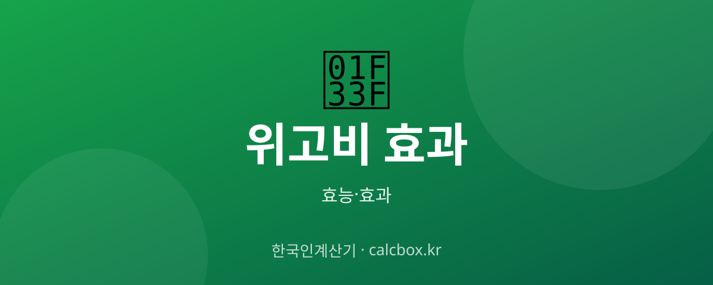

위고비 효과 — 비만 치료 주사의 원리와 감량 효과·부작용
'살 빠지는 주사'로 화제인 위고비. 세마글루타이드 성분이 어떻게 식욕을 줄이는지, 효과와 부작용은 무엇인지 정리했습니다.

위고비(세마글루타이드) 개요 — 어떤 것인가요?
위고비는 세마글루타이드 성분의 비만 치료 주사제입니다. 원래 당뇨 치료에 쓰이던 GLP-1 계열로, 식욕을 줄이고 포만감을 오래 유지시켜 체중 감량을 돕습니다. 반드시 의사 처방이 필요합니다.
위고비(세마글루타이드) 주요 효능·효과
- 식욕 억제 — 뇌의 식욕 중추와 위 배출 지연에 작용해 덜 먹게 돕습니다.
- 체중 감량 — 임상에서 유의미한 체중 감소가 보고돼 비만 치료에 쓰입니다.
- 대사 지표 개선 — 혈당·대사 지표 개선과 관련해 연구되고 있습니다.
섭취·사용 방법과 권장량
주 1회 피하주사로, 낮은 용량에서 점진적으로 증량하는 것이 원칙입니다. 반드시 처방과 의료진 안내에 따라 사용해야 하며 자가 판단 증량은 금물입니다.
주의사항·부작용
메스꺼움·구토·설사·변비 등 위장관 부작용이 흔합니다. 췌장염·담낭 문제 등 드문 위험이 있어 병력에 따라 사용이 제한됩니다. 중단하면 체중이 다시 늘 수 있어 생활습관 개선이 함께 가야 합니다. 미용 목적 오남용은 위험합니다.
자주 묻는 질문 (FAQ)
Q. 위고비는 처방 없이 살 수 있나요?
아닙니다. 위고비는 전문의약품으로 반드시 의사 처방과 진료가 필요합니다. 온라인 등 비정상 경로 구매는 위험합니다.
Q. 위고비를 끊으면 다시 살이 찌나요?
약을 중단하면 식욕이 돌아와 체중이 다시 늘 수 있습니다. 그래서 식단·운동 등 생활습관 개선을 함께 유지하는 것이 중요합니다.
Q. 위고비 부작용은 무엇인가요?
메스꺼움·구토·설사·변비 등 위장관 증상이 흔합니다. 드물게 췌장염 등 심각한 문제가 있을 수 있어 이상 증상이 있으면 의료진과 상담하세요.